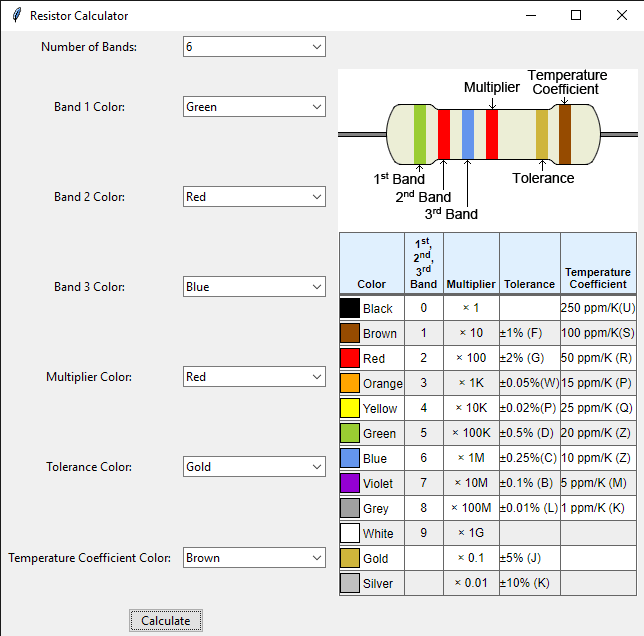
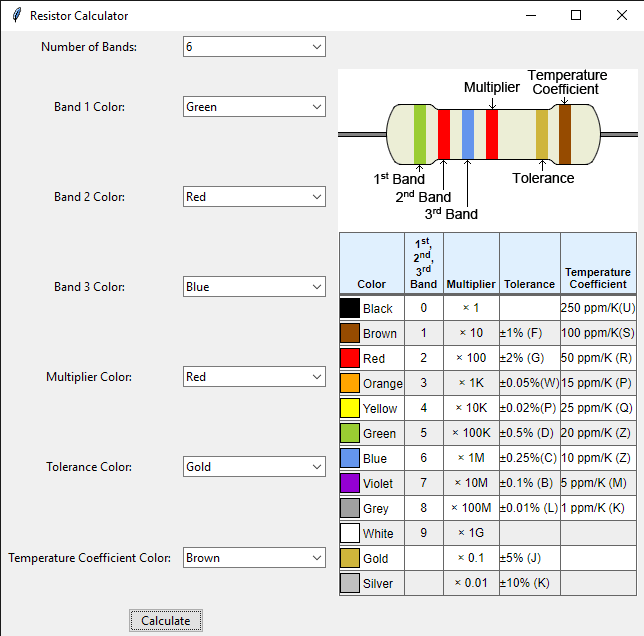
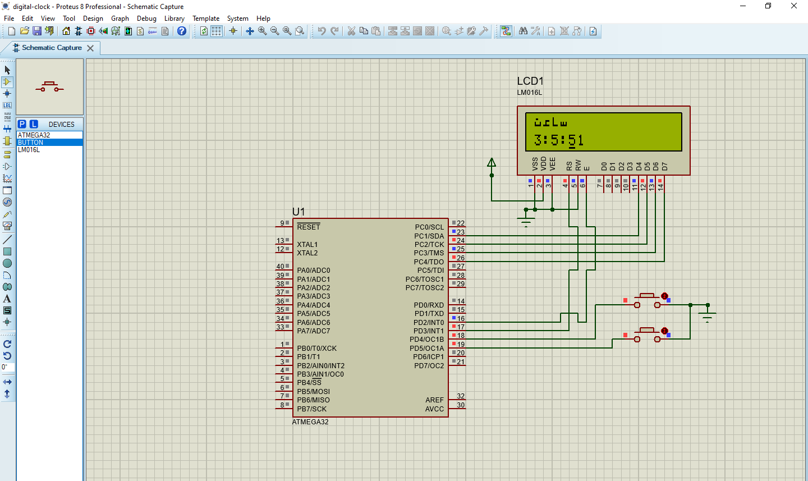
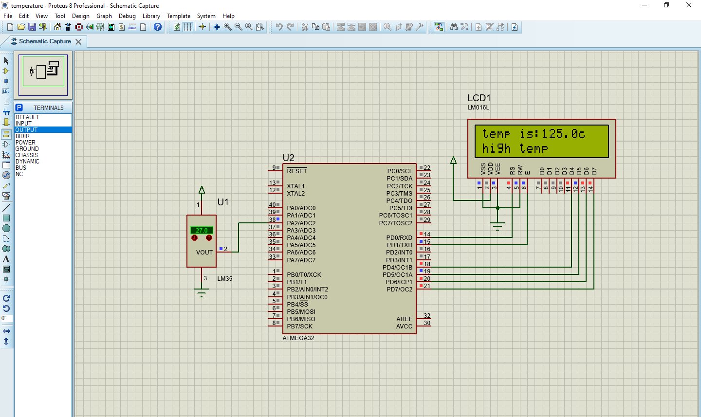
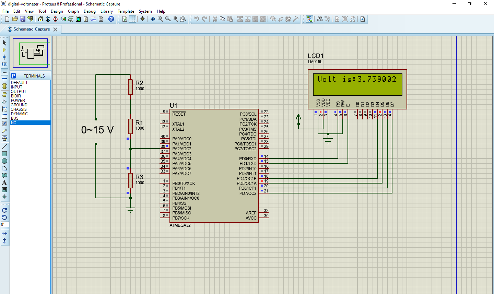

Resistor Calculator
This is a Python application built using Tkinter that helps users calculate the resistance of resistors based on their color bands. It supports resistors with 3 to 6 color bands.

This is a Python application built using Tkinter that helps users calculate the resistance of resistors based on their color bands. It supports resistors with 3 to 6 color bands.

This project is a simple digital clock implemented using a microcontroller, specifically an ATmega32. The clock features a 16x2 character LCD display to show the time in hours, minutes, and seconds. It also includes buttons for adjusting the hours and minutes.

This project involves monitoring temperature using a temperature sensor interfaced with a microcontroller, specifically an ATmega32. The temperature reading is displayed on a 16x2 character LCD screen. Additionally, the system alerts users if the temperature exceeds certain thresholds.

This project involves measuring voltage using an Analog-to-Digital Converter (ADC) interfaced with a microcontroller, specifically an ATmega32. The measured voltage is displayed on a 16x2 character LCD screen.
